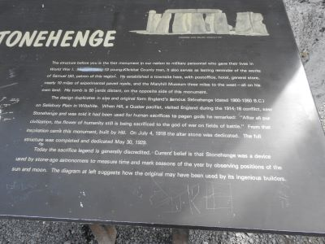
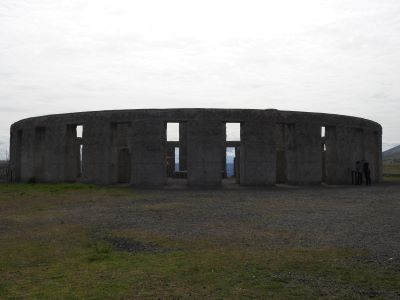
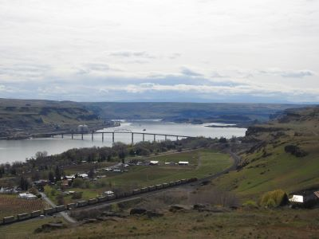

Camping at Le Page Park, OR
We also went to Stonehenge Memorial - for 13 young men who gave their lives during World War I.
Here is the remarks which struck me
“After all our civilization, the flower of humanity still is being satisficed to the god of war on fields of battle.”
I walked around there while chewing on these words!
 
The scenery from the Memorial overlooking Columbia River. It was very impressive!

×